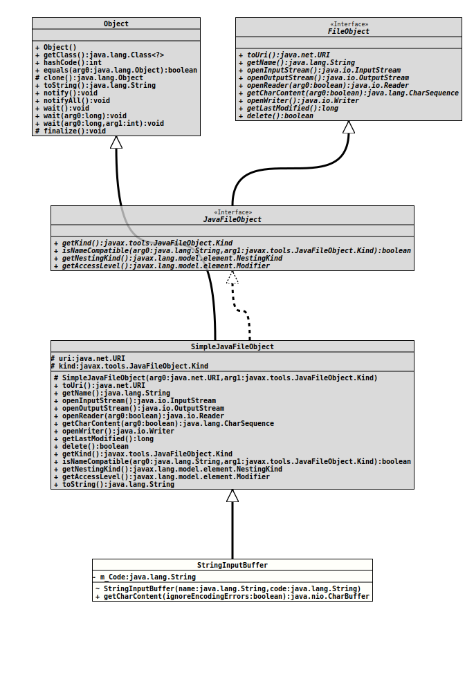

Class MemoryJavaFileManager.StringInputBuffer
java.lang.Object
javax.tools.SimpleJavaFileObject
org.tquadrat.foundation.scripting.internal.MemoryJavaFileManager.StringInputBuffer
- All Implemented Interfaces:
FileObject,JavaFileObject
- Enclosing class:
- MemoryJavaFileManager
@ClassVersion(sourceVersion="$Id: MemoryJavaFileManager.java 878 2021-02-20 19:56:13Z tquadrat $")
@API(status=INTERNAL,
since="0.0.5")
private static class MemoryJavaFileManager.StringInputBuffer
extends SimpleJavaFileObject
A file object used to represent Java source coming from a string.
- Author:
- A. Sundararajan
- Modified by:
- Thomas Thrien (thomas.thrien@tquadrat.org)
- Version:
- $Id: MemoryJavaFileManager.java 878 2021-02-20 19:56:13Z tquadrat $
- Since:
- 0.0.5
- UML Diagram
-

UML Diagram for "org.tquadrat.foundation.scripting.internal.MemoryJavaFileManager.StringInputBuffer"
{kind=link}
-
Nested Class Summary
Nested classes/interfaces inherited from interface javax.tools.JavaFileObject
JavaFileObject.Kind -
Field Summary
FieldsFields inherited from class javax.tools.SimpleJavaFileObject
kind, uri -
Constructor Summary
ConstructorsConstructorDescriptionStringInputBuffer(String name, String code) Creates a newStringInputBufferinstance. -
Method Summary
Methods inherited from class javax.tools.SimpleJavaFileObject
delete, getAccessLevel, getKind, getLastModified, getName, getNestingKind, isNameCompatible, openInputStream, openOutputStream, openReader, openWriter, toString, toUri
-
Field Details
-
m_Code
The contents.
-
-
Constructor Details
-
StringInputBuffer
StringInputBuffer(String name, String code) Creates a newStringInputBufferinstance.- Parameters:
name- The name of the "file".code- The source code as the contents.
-
-
Method Details
-
getCharContent
- Specified by:
getCharContentin interfaceFileObject- Overrides:
getCharContentin classSimpleJavaFileObject- See Also:
-